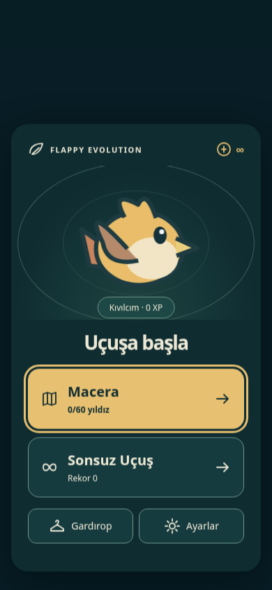
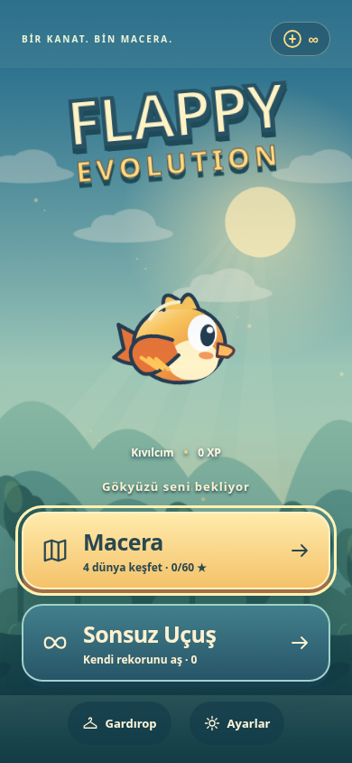
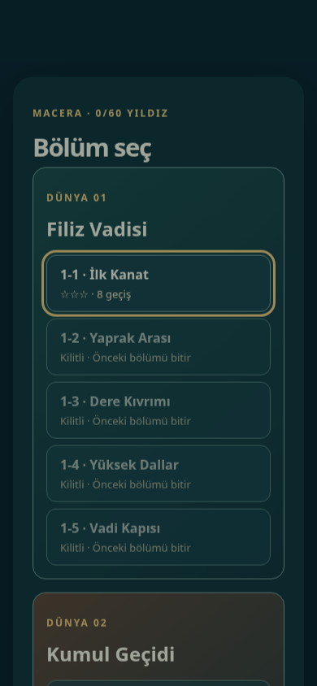
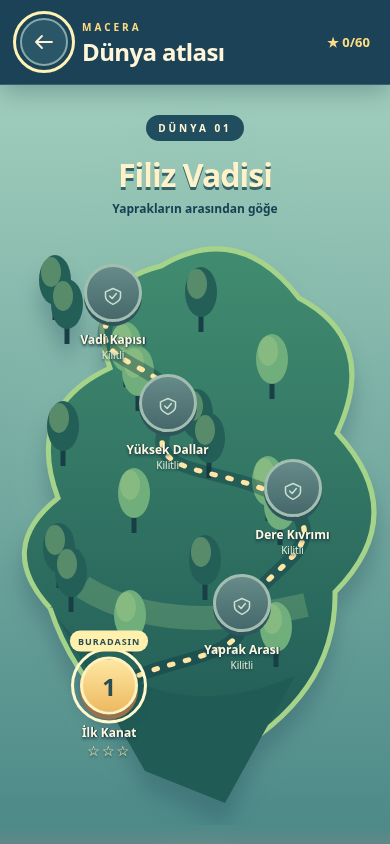
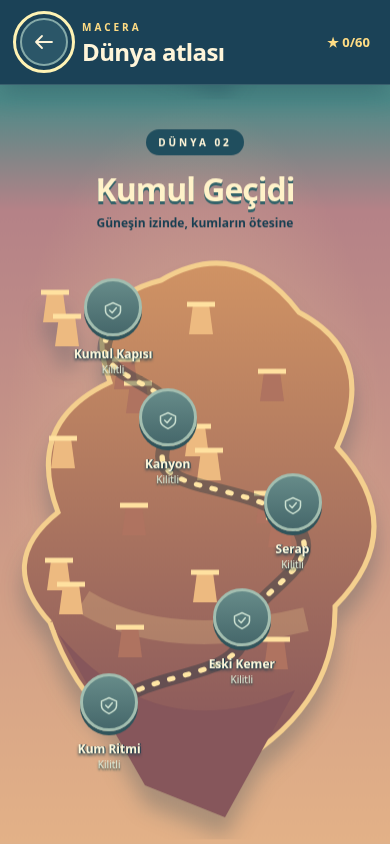
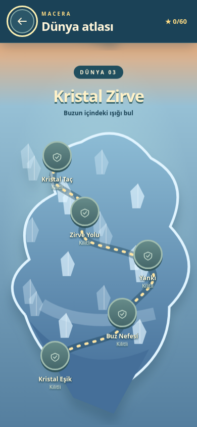
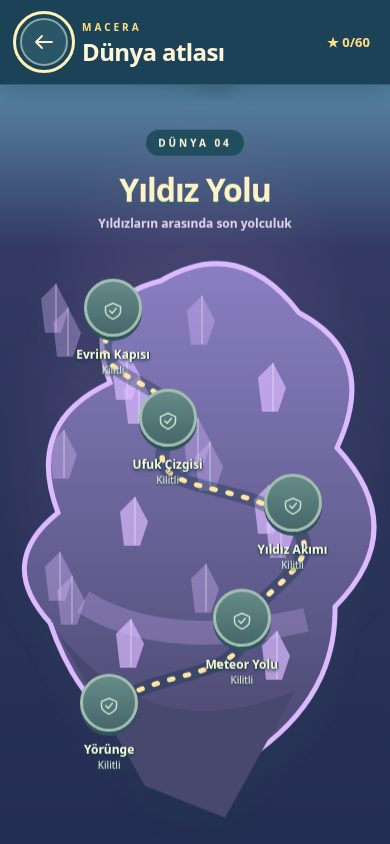
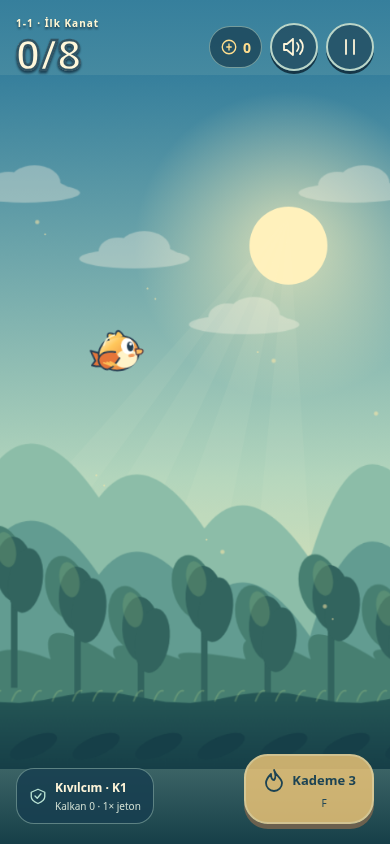
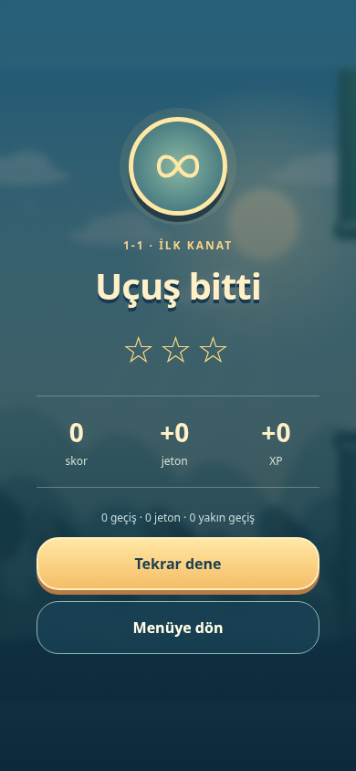
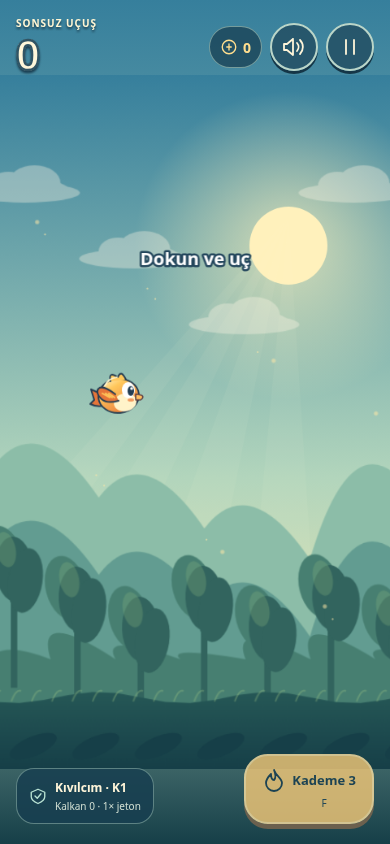

390 × 844 Chromium kayıtları. Önceki ekranlar, production ile 52 dosyası birebir eşleşen 0dddc51 sürümünün yerel çalıştırmasından alındı. Production adresine doğrudan tarayıcı erişimi ağ politikası nedeniyle engellendi.










Menü, harita, dokunarak uçuş, çarpışma ve Sonsuz Uçuş. Kaydın son kısmında otomatik giriş yardımı kullanıldı; fizik, engeller ve ödüller değiştirilmedi.
Kontroller: Dokun / Space / ↑ ile uç, F veya ateş düğmesiyle ateş et. Duraklat ve ses düğmeleri sağ üstte.